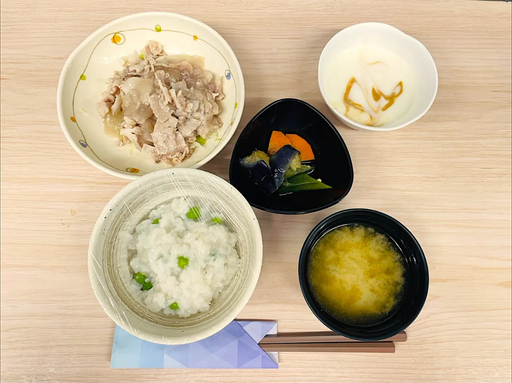
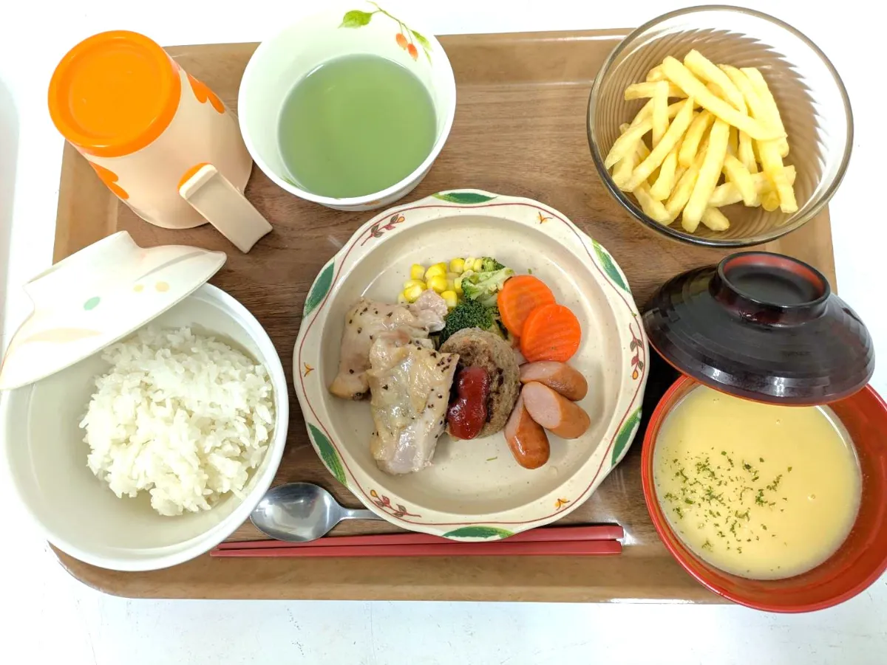
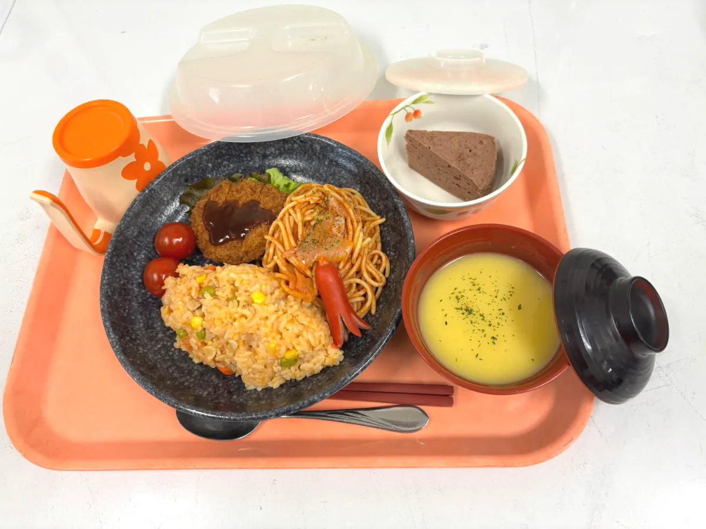
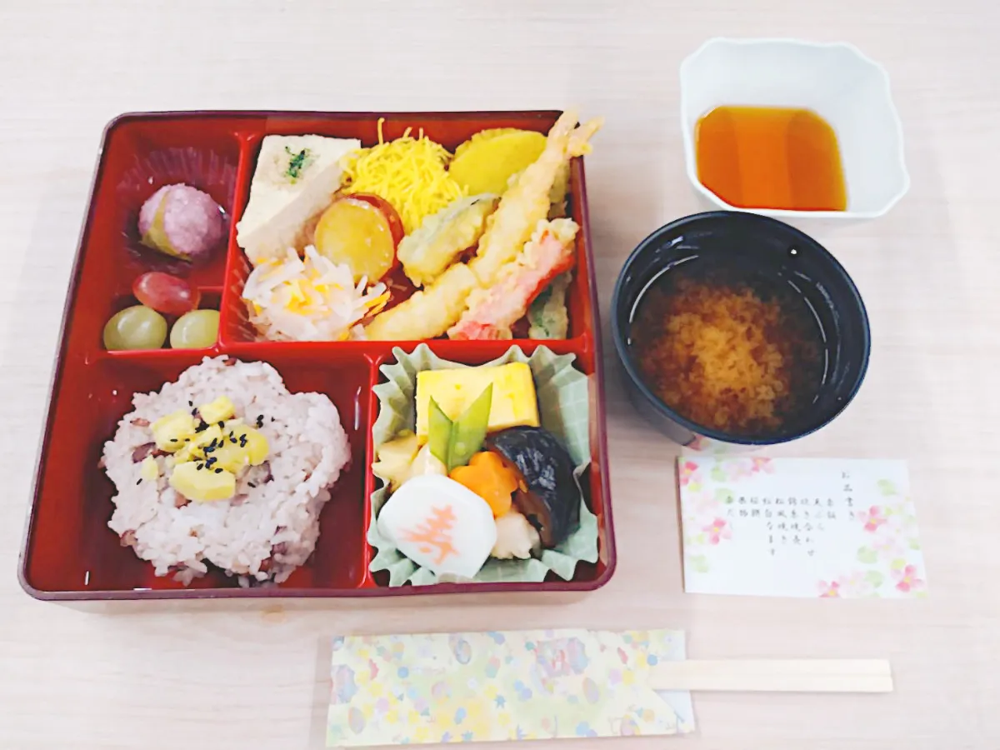
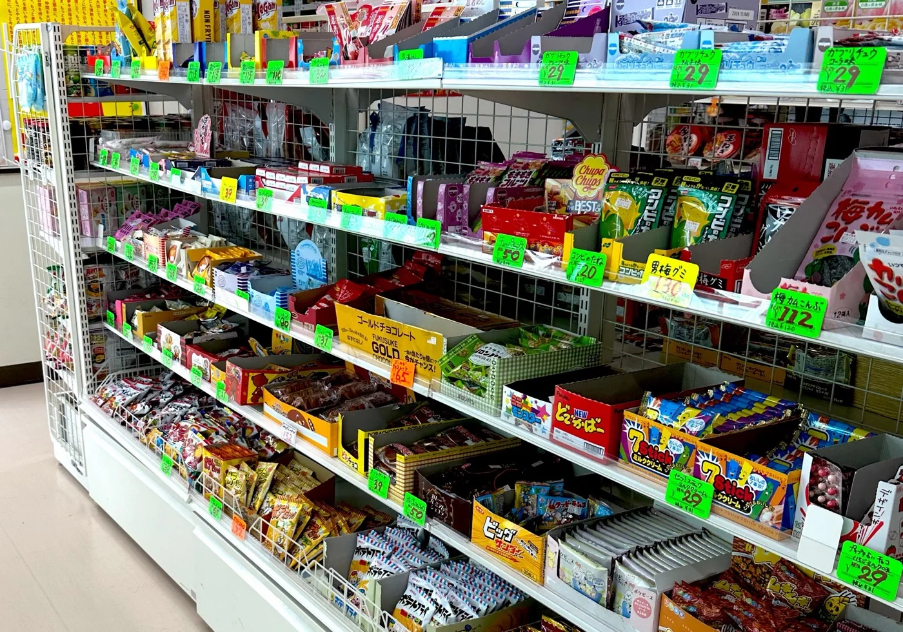

広島に根ざした給食受託会社。病院・福祉施設・企業・学校のお食事から、仕出し弁当・売店運営まで。 管理栄養士とHACCPの徹底した衛生管理で、一人ひとりに寄り添う食事をお届けします。
株式会社KANATAは創業以来、地元の食材を使用し、地域に根付いた経営を行ってまいりました。 皆様に愛され、信頼される「真心のこもった食事」をご提供することが私たちの使命です。
病院・福祉施設給食、社員食堂・寮運営、仕出し弁当、売店運営という4つの事業を軸に、 それぞれのお客様の暮らしに寄り添う食のサービスを展開しています。

患者様・入所者様にとって、食事はとても大切な時間です。
食を通じて、地域とお客様の暮らしを支える。私たちの中核となる4つのサービス。

01病院・福祉施設の患者様・入所者様に向けて、美味しく温かい食事をご提供。減塩食・糖質制限食・軟菜食など、一人ひとりに合わせた対応を行います。

02企業様の社員食堂・社員寮、学校様の学食・学生寮の食事運営を承ります。事業主様・利用者様に寄り添った食堂運営をご提案いたします。

03用途に合わせた多彩なお弁当をご用意。ホームパーティー、行事に合わせた仕出し、幕の内弁当から冠婚葬祭時の一折・二折、寿司まで幅広く取り扱います。

04大学や予備校など、学校施設内での売店・コンビニの開設・運営を行います。施設内から外出しなくても買い物ができ、豊富な品揃えで最適なご提案をいたします。
「安全・安心・美味しい商品の提供」を経営方針の中心に据え、 管理栄養士の栄養管理の下、心を込めた食事とサービスをお届けしています。
管理栄養士を中心に各店舗を巡回するスーパーバイザー本部を設置。HACCPの概念に基づく衛生指導を実施し、毎月の検便提出・厨房機器の拭き取り検査・毎日の手洗いチェック・個人衛生チェック表など、徹底した衛生管理を行っています。
お客様に安全・安心な食事をお届けするため、できるだけ地元の食材を使用して調理いたします。契約農家から直接仕入れる食品は、新鮮で安心な食材として日々の食事に活かされています。
各委託先にマネージャー制管理を導入。病院患者給食受託には責任者を配置し、丁寧な個別対応を実施。本部管理栄養士・調理師トレーナー数名がスーパーバイザーとして各店舗を監督・指導しています。
各施設で代行保証制度に加入し、万が一の場合の体制を整備。地元のネットワークを活かし、予期せぬ事態にも迅速に対応いたします。被害拡大防止・被害者への対応・原因特定・再発防止までを速やかに実施します。
新鮮な食材を使用し、熟練した調理技術で食事をお届けします。 健康を創り、真心のこもった接客対応で、お客様のお食事の時間を彩ります。
利用者一人ひとりの食情報を中核に据えた、新しい給食運営のかたち。 食形態・疾病制限・アレルギー・嗜好・摂取量履歴を一元管理し、 献立判定から厨房指示・配膳確認・記録・残食分析まで、一気通貫で支援します。
高齢化に伴う需要の増加、給食現場の人手不足、個別対応の高度化。 これら業界課題に対し、当社の「委託調理会社」としての知見に、 食の安全・個別最適化・省力化・データ活用を組み合わせた高付加価値サービスとして、事業化を進めています。
個人別の食情報を一元管理し、施設・厨房・配膳現場でリアルタイム共有。
提供可否・除去要否・代替・食形態変更・量調整を自動判定して注意喚起表示。
盛付指示書やラベル、色分け表示で、誤配膳を未然に防止します。
摂取量・残食理由・体調変化を記録し、次回の献立改善に活用。
配膳件数・残食率・作業時間削減率・利用者満足度などを可視化。
アレルギー・宗教・嗜好履歴まで、一人ひとりに寄り添う運用を支援。
給食受託、社員食堂・寮の運営、仕出し弁当、施設内売店の開設まで。 ご要望に応じた最適なご提案をいたします。